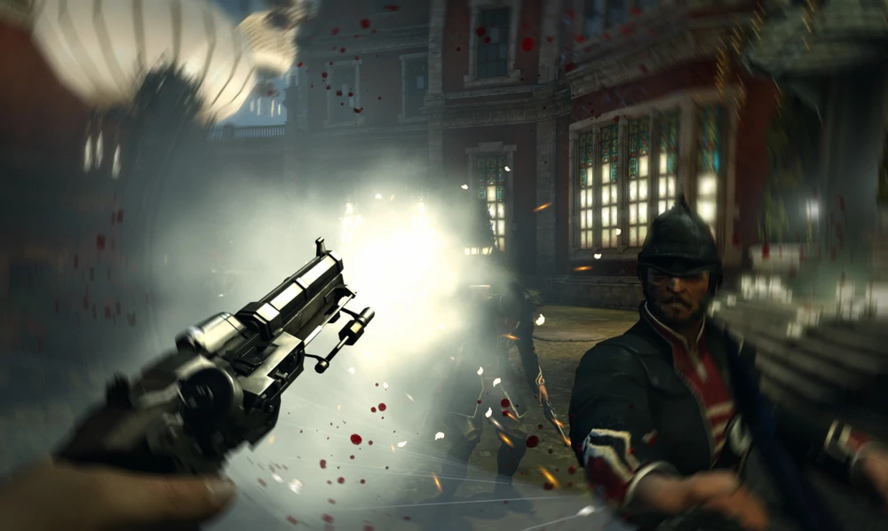
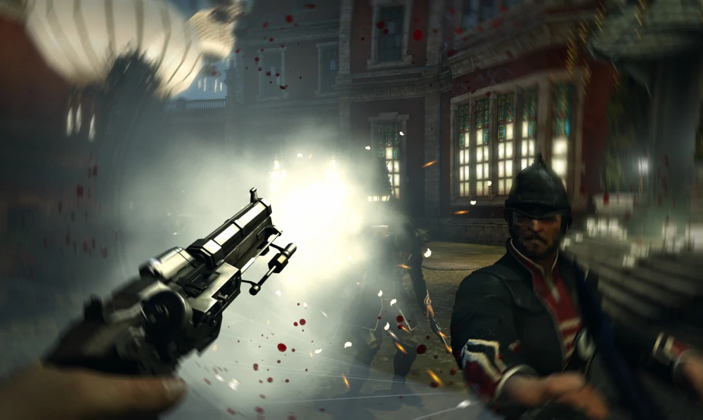

Dishonored
- 08.10.2012 PC
- 08.10.2012 PlayStation 3
- 08.10.2012 Xbox 360
- Жанры:
- Экшен, Стелс, От первого лица, Стимпанк
- Официальный сайт:
- https://bethesda.net/ru/game/dishonored-de
- Разработчик: Arkane Studios
- Издатель: Bethesda Softworks
- Издатель в России: 1С-СофтКлаб
Описание:
Dishonored — это насыщенный экшен от первого лица, в котором вам предстоит вжиться в
роль убийцы, чьими поступками движет жажда мести. Гибкая система боя в Dishonored
позволит вам комбинировать ваши сверхъестественные способности, оружие и необычные
устройства так, как того захотите вы, чтобы устранить ваши цели. Преследуйте врагов под
покровом тьмы или обнажите клинок и сразитесь с противником лицом к лицу. Результаты
каждой миссии зависят от того, какой путь вы выберите.
Место действия Dishonored — промышленный город Дануолл, где во мраке теней тесно
переплелись паровые механизмы и загадочные потусторонние силы. Вы были одним из лучших
телохранителей всеми почитаемой Императрицы. Но когда ее убили, вы стали главным
подозреваемым и превратились в глазах общественности в бесчестного убийцу, которого
знают только по маске, ставшей вашей визитной карточкой. И теперь, в это смутное время,
когда город поразила вспышка чумы, а к власти пришло продажное правительство,
вооруженное промышленными технологиями, темные силы предлагают вам дар, который сделает
вас могущественнее любого человека. Но какую цену придется за это заплатить? Истина,
которая скрывается за вашим предательством, так же мрачна, как и воды, омывающие этот
город. С этого момента ваша жизнь никогда не будет прежней.
Главные особенности Dishonored представлены возможностью импровизировать и находить
оригинальные пути решения задачи, сверхъестественными способностями, которыми владеет не
только главный герой, но и некоторые противники, и уникальным во всех смыслах этого
слова городом.
Системные требования:
- Операционная система: Windows Vista/7
- Процессор: 4-хъядерный с тактовой частотой 2.4 ГГц
- Видеокарта: NVIDIA GeForce GTX 460 / AMD Radeon HD 5850 с 768 Мб видеопамяти
- Оперативная память: 4 ГБ
- Звуковая карта: совместимая с DirectX 9.0
- Место на диске: 9 ГБ
- DirectX: 9.0 и выше
Галерея Изображений:
 
